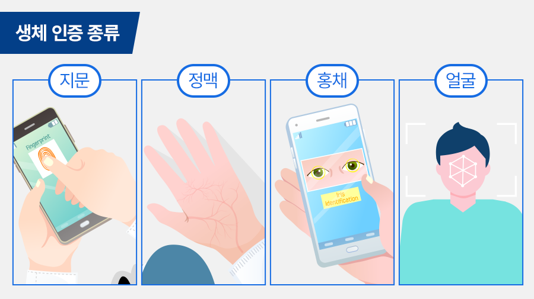
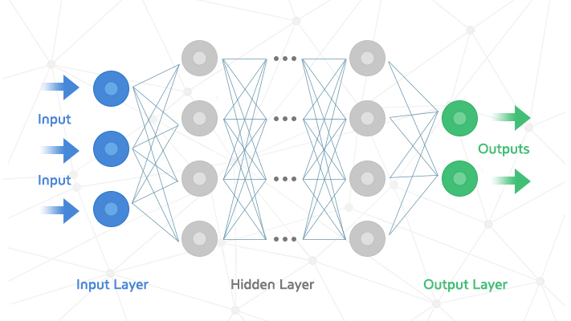
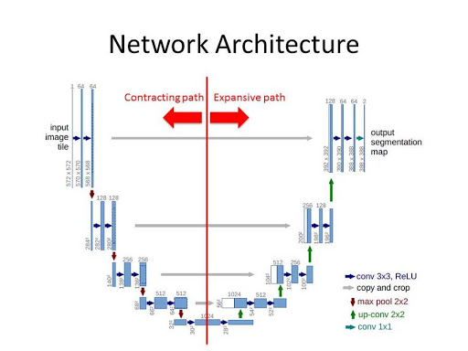

Theory & Algorithm
1. Biometric Recognition System
보안 시스템에 대한 수요가 증가함에 따라,
생체인식은 정보 보안에서 가장 중요하고 도전적인 작업 중 하나가 되었습니다.

생체인식 기술은 자동화 장치를 이용하여
지문이나 홍채, 망막, 정맥, 손금, 얼굴 윤곽은 물론 목소리, 필체, 체형, 걸음걸이 등
인간의 다양한 신체적, 행동적 특성을 측정해 개인 식별 및 인증의 수단으로 활용하는 것입니다.
지금까지는 아이디(ID)와 비밀번호, 공인인증서, OTP 카드 등을 인증 수단으로 많이 사용하고 있지만
도난, 분실, 망각 등 문제 때문에 보안성에 여러 문제가 있었습니다.
반면 생체인식은 사용자 본인의 고유한 특징을 이용하기 때문에 도난, 분실, 위조의 위험이 없으며
보안성도 상당히 높다는 평가를 받고 있습니다.
정맥인식은 손가락, 손바닥에 있는 정맥 형태를 적외선과 필터를 사용해 혈관을 투시한 후,
잔영을 이용해 정보를 추출하고 인식하는 기술입니다.
혈관의 모양을 인식하는 시스템이기 때문에 복제가 거의 불가능해서 보안성이 높고,
사람마다 정맥 굵기나 선명도, 모양, 흐름이 달라서 고유성이 높습니다.
또한 정맥은 일정 나이대가 지나면 변하지 않는 영구적인 특징도 있습니다.

하지만 정맥인식도 단점은 있습니다.
정맥인식은 근적외선 필터를 사용해 투시하면,
피부층과 내부골격등에 의한 빛의 산란 및 불균일한 내부 조직 때문에
정맥 영역 뚜렷하게 나타나지 않는 단점이 있습니다.
이렇게 얻은 지정맥 영상은 특징점을 찾기 어렵거나 생체인식에서 정확도를 낮추게 됩니다.
따라서 저희는 딥러닝 기반으로 뚜렷한 정맥영역을 획득하여
보다 정확한 특징 추출과 생체인식 정확도를 높이기 위한 작업을 목표로 삼았습니다.
2. Deep Learning

이 프로젝트에서는 딥러닝 모델 중 하나인 U-NET 모델을 사용했습니다.
U-net이란 Fully convolutional network FCN을 기반으로
적은 training image와 더 정확한 segmentation을 위해 변형된 'U'모양의 네트워크입니다.
단순히 이미지를 분류하는 문제를 넘어서서, 이미지의 특정 영역을 Label로 표현하는
Image Segmentation에 주된 목적이 있는 모델입니다.

U-net의 구조는 down-sampling을 진행하는 contracting path와
up-sampling을 진행하는 expansive path가 대칭을 이루는 형태입니다.
여기서 주목해야 할 부분은 매 contracting layer마다
max pool을 하기 전 각 레이어의 결과값을 대응되는 우측 output 필터에 연결한다는 점입니다.